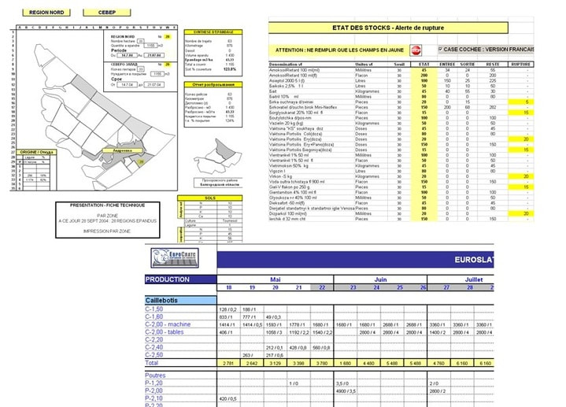
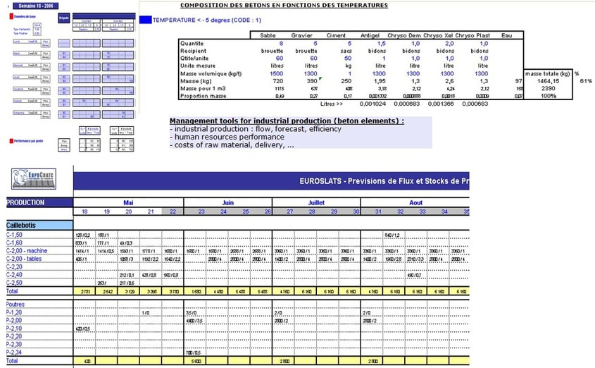
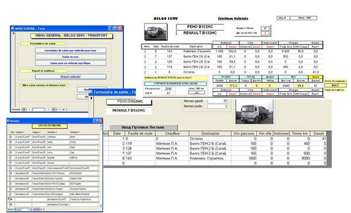
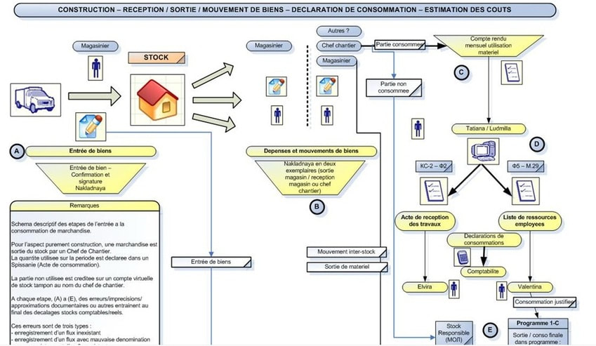
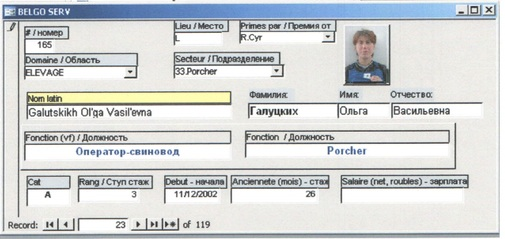

Contrôle de gestion
Analyse des coûts, suivi budgétaire, mise en place d’indicateurs de performance.

Gestion industrielle
Optimisation des processus de production, planification et gestion des ressources.

Suivi d'activité
Tableaux de bord, reporting régulier et pilotage des activités opérationnelles.

Analyse d'activité
Étude des données opérationnelles, identification des tendances et recommandations stratégiques.

Organisation
Structuration des équipes, gestion de projet et amélioration continue.
